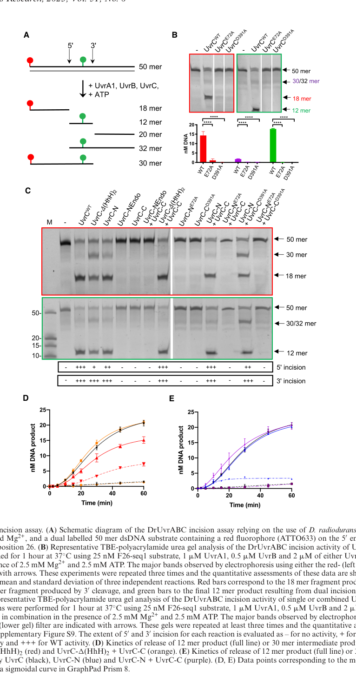

UvrB is the central DNA damage-verification subunit of the bacterial UvrABC nucleotide excision repair (NER) system, which removes a structurally diverse range of helix-distorting DNA lesions such as bulky adducts and UV-induced photoproducts. UvrB is an ATP-dependent superfamily-2 (SF2) helicase-family protein containing tandem RecA-like helicase domains, a P-loop ATP-binding site, a characteristic damage-sensing beta-hairpin, and a C-terminal UVR domain that mediates interactions with partner Uvr proteins. Within NER, the UvrA(2)B(2) complex scans DNA for abnormalities; ATP-dependent wrapping of DNA around a UvrB monomer locally melts the duplex and inserts the UvrB beta-hairpin between the strands so that UvrB can probe one strand for a lesion. When a lesion is verified, UvrA dissociates and a stable UvrB-DNA pre-incision complex forms, which then recruits the UvrC endonuclease for dual incision flanking the lesion. UvrB acts in the cytoplasm on chromosomal DNA and is a core component of the cellular response to DNA damage, including the SOS response.
| GO Term | Evidence | Action | Reason |
|---|---|---|---|
|
GO:0003677
DNA binding
|
IEA
GO_REF:0000120 |
ACCEPT |
Summary: UvrB binds DNA as part of damage scanning and pre-incision complex formation; its beta-hairpin motif inserts between DNA strands for lesion probing.
Reason: DNA binding is a well-established, core activity of UvrB, supported by the UvrB-family HAMAP rule and conserved across all bacterial UvrB orthologs. The UniProt record explicitly notes the beta-hairpin motif is involved in DNA binding.
|
|
GO:0005524
ATP binding
|
IEA
GO_REF:0000120 |
ACCEPT |
Summary: UvrB possesses a P-loop (Walker A) ATP-binding site (residues 38-45); ATP binding drives DNA wrapping and helix melting required for lesion verification.
Reason: ATP binding is intrinsic to the SF2 helicase fold of UvrB and is supported by the conserved Walker A motif annotated in the UniProt record. Core molecular function.
|
|
GO:0005737
cytoplasm
|
IEA
GO_REF:0000120 |
ACCEPT |
Summary: UvrB acts on chromosomal DNA in the bacterial cytoplasm/nucleoid.
Reason: Consistent with UniProt subcellular location (Cytoplasm) and the biology of a cytoplasmic DNA repair protein in a bacterium lacking a nucleus.
|
|
GO:0006281
DNA repair
|
IEA
GO_REF:0000104 |
KEEP AS NON CORE |
Summary: UvrB is a core DNA repair protein acting in nucleotide excision repair.
Reason: Correct but general. The more specific child term GO:0006289 (nucleotide-excision repair) is also annotated and better captures the precise role, so this broad parent is retained as non-core context rather than as the representative core function.
|
|
GO:0006289
nucleotide-excision repair
|
IEA
GO_REF:0000120 |
ACCEPT |
Summary: UvrB is the damage-verification subunit of the UvrABC excinuclease, central to bacterial nucleotide excision repair.
Reason: This is the core biological process of UvrB, strongly supported by family conservation and the UvrB HAMAP rule. Captures the precise role of the gene.
|
|
GO:0009380
excinuclease repair complex
|
IEA
GO_REF:0000002 |
ACCEPT |
Summary: UvrB forms a heterotetramer (UvrA2B2) with UvrA during lesion scanning and interacts with UvrC in the incision complex.
Reason: Accurately reflects UvrB's role as a component of the UvrABC excinuclease complex; supported by the UniProt SUBUNIT annotation. Core cellular component.
|
|
GO:0009381
excinuclease ABC activity
|
IEA
GO_REF:0000104 |
ACCEPT |
Summary: UvrB contributes the damage-verification and helicase/ATPase activity to the UvrABC excinuclease that recognizes and processes DNA lesions for dual incision.
Reason: Represents the core enzymatic activity of the UvrABC system to which UvrB is essential. Supported by family conservation and the UvrB HAMAP rule.
|
|
GO:0009432
SOS response
|
IEA
GO_REF:0000104 |
KEEP AS NON CORE |
Summary: uvrB is part of the bacterial DNA-damage/SOS regulon in many bacteria, contributing to the cellular response to DNA damage.
Reason: In E. coli uvrB is SOS-inducible (LexA-regulated), and this electronic annotation is propagated by the UvrB UniRule. However, SOS regulation is not universal among bacteria (notably reported as not SOS-regulated in some Pseudomonas species), and it reflects regulatory context rather than UvrB's core molecular/repair function. Retained as non-core.
|
|
GO:0016787
hydrolase activity
|
IEA
GO_REF:0000002 |
MARK AS OVER ANNOTATED |
Summary: Very general hydrolase parent term; UvrB's relevant hydrolase activity is ATP hydrolysis.
Reason: GO:0016787 is an uninformative high-level parent of the more specific and also-annotated GO:0016887 (ATP hydrolysis activity). It adds no functional specificity beyond the ATPase annotation.
|
|
GO:0016887
ATP hydrolysis activity
|
IEA
GO_REF:0000002 |
ACCEPT |
Summary: UvrB hydrolyzes ATP via its SF2 helicase ATPase machinery; ATP hydrolysis is essential for forming the UvrB-DNA pre-incision complex.
Reason: ATP hydrolysis (ATPase activity) is a well-established core molecular function of UvrB, supported by the conserved helicase motifs and Walker A/B-containing helicase ATP-binding domain.
|
The research report should be a detailed narrative explaining the function, biological processes, and localization of the gene product. Citations should be given for all claims.
You should prioritize authoritative reviews and primary scientific literature when conducting research. You can supplement
this with annotations you find in gene/protein databases, but these can be outdated or inaccurate.
We are specifically interested in the primary function of the gene - for enzymes, what reaction is catalyzed, and what is the substrate specificity? For transporters, what is the substrate? For structural proteins or adapters, what is the broader structural role? For signaling molecules, what is the role in the pathway.
We are interested in where in or outside the cell the gene product carries out its function.
We are also interested in the signaling or biochemical pathways in which the gene functions. We are less interested in broad pleiotropic effects, except where these elucidate the precise role.
Include evidence where possible. We are interested in both experimental evidence as well as inference from structure, evolution, or bioinformatic analysis. Precise studies should be prioritized over high-throughput, where available.
The requested protein is UvrABC system protein B (UvrB; excinuclease ABC subunit B) encoded by uvrB at ordered locus PP_1974 in Pseudomonas putida strain KT2440, UniProt accession Q88LF9. The mechanistic literature retrieved describes UvrB as the bacterial nucleotide excision repair (NER) damage-verification factor and an SF2 helicase-family ATPase with hallmark helicase motifs and a conserved β-hairpin used for damage verification, which aligns with the expected UvrB family/domain composition for Q88LF9. (thakur2023globalgenomeand pages 3-4, seck2023structuralandfunctional pages 1-2)
NER is a conserved, versatile DNA repair pathway that removes structurally diverse, helix-distorting DNA lesions (e.g., bulky adducts and UV photoproducts) via a multistep process requiring UvrA, UvrB, and UvrC (the “UvrABC excinuclease”), followed by post-incision processing. (seck2023structuralandfunctional pages 1-2, thakur2023globalgenomeand pages 1-3)
UvrB is the central lesion-verification and DNA-engagement factor in bacterial NER. After UvrA recognizes or senses damage and recruits UvrB to DNA, UvrB forms a stable UvrB–DNA pre-incision complex at the lesion; this complex then recruits UvrC to perform dual incision flanking the lesion. (seck2023structuralandfunctional pages 1-2, thakur2023globalgenomeand pages 3-4)
Mechanistic summaries describe UvrB as having ATPase-dependent helicase/translocase functions that become functionally engaged during repair: UvrB translocates on DNA and promotes local DNA opening that enables stable lesion engagement and verification. In one 2023 review, UvrB ATP hydrolysis is described as essential for formation of the UvrB–DNA preincision complex (a prerequisite for UvrC recruitment). (thakur2023globalgenomeand pages 3-4, seck2023structuralandfunctional pages 1-2)
UvrB is described as an SF2-family helicase with conserved helicase motifs I–VI, RecA-like domains (e.g., domains 1a and 3 in a commonly used domain scheme), plus accessory domains and a projecting β-hairpin. The β-hairpin inserts between DNA strands, promoting local strand separation and enabling the damaged base to be flipped/positioned into a UvrB pocket for damage verification. (seck2023structuralandfunctional pages 1-2, genta2025prokaryoticdnarepair pages 36-43)
After UvrB verifies the lesion and recruits UvrC, the endonuclease incises both sides of the lesion to release a short oligonucleotide; one mechanistic description specifies release of a ~12–13 nucleotide single-stranded fragment containing the lesion. (seck2023structuralandfunctional pages 1-2)
For P. putida KT2440, the most defensible functional annotation—based on conserved mechanism and genus-level evidence—is:
- Process: Nucleotide excision repair of bulky, helix-distorting DNA lesions.
- Role: Damage verification and pre-incision complex formation at lesion sites (UvrB–DNA complex), enabling recruitment/activation of UvrC for dual incision. (thakur2023globalgenomeand pages 3-4, seck2023structuralandfunctional pages 1-2)
While direct P. putida KT2440 uvrB knock-out phenotypes were not retrieved in the available corpus, Pseudomonas spp. studies emphasize that NER is a major determinant of UV survival, supporting the biological importance of the pathway in the genus. (gunasekera2006roleofnucleotide pages 7-8)
NER substrates are defined broadly as DNA helix distortions rather than a single chemical substrate class. The 2023 mechanistic sources emphasize NER’s ability to remove a wide range of lesions and UvrB’s role in lesion verification after UvrA-mediated detection/hand-off. (seck2023structuralandfunctional pages 1-2, thakur2023globalgenomeand pages 1-3)
UvrB functions on chromosomal DNA; thus its operational localization is the cytosol/nucleoid where DNA resides. This is implied by the mechanistic descriptions of UvrB binding/translocating on DNA to form pre-incision complexes and by its role in transcription-coupled repair at transcription-blocking lesions. (thakur2023globalgenomeand pages 3-4, thakur2023globalgenomeand pages 1-3)
In GG-NER, UvrA recognizes helix distortions and recruits UvrB; UvrB then engages the lesion-containing strand, verifies damage, and establishes the pre-incision complex needed for UvrC recruitment and incision. (thakur2023globalgenomeand pages 3-4, seck2023structuralandfunctional pages 1-2)
A 2023 review summarizes that in prokaryotic TCR, UvrAB is recruited to transcription-blocking lesions after RNAP is displaced/backtracked, and UvrB is loaded onto the damaged template strand for homing and verification. (thakur2023globalgenomeand pages 1-3)
A 2023 Nucleic Acids Research study focusing on UvrC activation places UvrB upstream as the damage-verification component and reiterates that UvrB’s ATPase/helicase activities are activated in the NER context to enable local DNA opening and stable lesion association; the work provides updated structural/mechanistic framing for the handoff from UvrB-bound lesion to activated UvrC. (seck2023structuralandfunctional pages 1-2, seck2023structuralandfunctional media 8f79c5ac)
A 2023 review (Journal of Biosciences) explicitly discusses UvrB translocation on the damaged strand and highlights that UvrB ATP hydrolysis is essential for formation of the preincision complex, refining how ATP usage maps to assembly/disassembly steps in early NER. (thakur2023globalgenomeand pages 3-4)
Recent work and review-level discussion link stress signaling to repair pathway function, including NER/TCR complexes involving UvrA/UvrB. Specifically, a 2023 cryo-EM/biochemical/genetic study reports that ppGpp control of RNAP elongation impacts bacterial sensitivity to genotoxic agents and UV, and frames this within assembly of functional transcription-coupled repair machinery that includes NER factors such as UvrA and UvrB. (thakur2023globalgenomeand pages 1-3)
A quantitative UV spot assay comparing E. coli and P. putida KT2440 reported that 30 J/m² UV left E. coli “virtually intact,” whereas the same dose decreased P. putida KT2440 survival by >4 orders of magnitude, indicating a strong DNA-damage challenge context in which repair pathways like NER (including UvrB) are expected to be important. (martinez‐garcia2015freeingpseudomonasputida pages 7-10)
The same study showed that deleting multiple prophages (a Δall-Φ strain) increased UV resistance relative to wild-type KT2440, especially at higher UV intensities (15–30 J m⁻²), and interpreted the wild-type hypersensitivity as being driven largely by SOS-triggered prophage gene expression rather than a demonstrated defect of the host recombination/repair capacity. (martinez‐garcia2015freeingpseudomonasputida pages 7-10, martinez‐garcia2015freeingpseudomonasputida pages 10-12)
In P. syringae pv. syringae B728a, loss of a core NER component (uvrA) strongly sensitized cells to UVB/solar UVB. For example, a phr uvrA double mutant showed a 10-fold survival reduction after 2000 J m⁻² solar UVB and an approximately 10⁷-fold reduction after 4000 J m⁻² solar UVB, consistent with NER being a major determinant of UV survival in pseudomonads (supporting the inferred importance of the conserved UvrB homolog in the same pathway). (gunasekera2006roleofnucleotide pages 6-7)
Although not measuring NER directly, Pseudomonas studies of DNA damage responses show strong inducible mutagenesis pathways (translesion synthesis) that can co-occur with repair pathways. In P. putida PaW1, mitomycin C induced expression of error-prone polymerase genes rulAB ~14-fold and imuC ~8-fold; UV-C at 5 J/m² increased Rif^r mutant frequency by ~60-fold in P. fluorescens PC20 and ~38-fold in PC24, illustrating the magnitude of DNA damage–responsive systems operating alongside NER in related pseudomonads. (ilmjarv2017contributionofincreased pages 9-10)
Because P. putida KT2440 is used as an industrial/biotech chassis, stress endurance under DNA-damaging conditions is practically relevant. A 2015 study showed that removing proviral load increased tolerance to UV and several DNA-damaging chemicals, and concluded that this produced a “more robust” P. putida platform strain for biotechnology/environmental applications—highlighting that DNA damage responses (including NER components such as UvrB) form part of the durability envelope for deployment. (martinez‐garcia2015freeingpseudomonasputida pages 10-12, martinez‐garcia2015freeingpseudomonasputida pages 12-15)
The same work discusses plasmid-borne UV tolerance via rulAB (Pol V) on the TOL plasmid pWW0 (in P. putida mt-2, related to KT2440) as a transferable DNA-damage tolerance trait, illustrating how DNA repair/bypass functions can be engineered or acquired to tune survival under genotoxic stress. (martinez‐garcia2015freeingpseudomonasputida pages 12-15)
| Topic | Key points | Quantitative data | Organism/strain | Source (with DOI URL and year) |
|---|---|---|---|---|
| Verified identity of target protein | Target is uvrB / PP_1974 / UniProt Q88LF9 from Pseudomonas putida KT2440; UniProt description identifies it as UvrABC system protein B / Excinuclease ABC subunit B, belonging to the UvrB family. Literature context on bacterial UvrB matches this annotation: UvrB is the damage-verification subunit of the bacterial UvrABC excinuclease in NER and is a helicase-family ATPase acting at damaged DNA. | No strain-specific quantitative value reported in provided contexts for identity itself. | Pseudomonas putida KT2440 (target); comparative mechanistic literature from diverse bacteria | Thakur & Muniyappa 2023, DOI: https://doi.org/10.1007/s12038-023-00378-8 (thakur2023globalgenomeand pages 3-4, thakur2023globalgenomeand pages 1-3) |
| Core molecular function in bacterial NER | UvrB is the central damage-verification factor in bacterial nucleotide excision repair. After lesion sensing by UvrA, UvrB is loaded onto DNA, forms the pre-incision complex, and then recruits UvrC for dual incision of the damaged strand; downstream UvrD/Pol I/ligase complete repair. UvrB associates stably with the lesion-containing strand after local duplex opening. | UvrC excises a 12–13 nt lesion-containing oligonucleotide after UvrB pre-incision complex formation. | General bacterial NER | Seck et al. 2023, DOI: https://doi.org/10.1093/nar/gkad108 (seck2023structuralandfunctional pages 1-2); Thakur & Muniyappa 2023, DOI: https://doi.org/10.1007/s12038-023-00378-8 (thakur2023globalgenomeand pages 3-4); Genta 2025 review context (genta2025prokaryoticdnarepair pages 36-43, genta2025prokaryoticdnarepaira pages 36-43) |
| Key domains and catalytic features | UvrB is described as an SF2/helicase-family ATPase with conserved helicase motifs I–VI, RecA-like domains 1a and 3, and auxiliary domains 1b, 2, and 4. It has weak intrinsic ATPase/helicase activity that is stimulated in the NER complex and supports local DNA unwinding/translocation needed for lesion engagement. | ATP hydrolysis is essential for formation of the UvrB–DNA preincision complex, though reported as dispensable for UvrA dissociation in one mechanistic summary. | General bacterial NER | Thakur & Muniyappa 2023, DOI: https://doi.org/10.1007/s12038-023-00378-8 (thakur2023globalgenomeand pages 3-4); Seck et al. 2023, DOI: https://doi.org/10.1093/nar/gkad108 (seck2023structuralandfunctional pages 1-2); Covizzi 2024 context (covizzi2024recombinantexpressionanda pages 16-20) |
| Mechanistic motifs for damage verification | A conserved β-hairpin inserts between DNA strands, helping separate them and flip the damaged base into a hydrophobic pocket in UvrB for lesion verification. Structural/biochemical summaries also note that a second UvrB protomer can engage the opposite strand in some models before dissociation. | In one mechanistic review, a second UvrB can dissociate after translocating ~22–27 nt when no lesion is present. | General bacterial NER | Seck et al. 2023, DOI: https://doi.org/10.1093/nar/gkad108 (seck2023structuralandfunctional pages 1-2); Thakur & Muniyappa 2023, DOI: https://doi.org/10.1007/s12038-023-00378-8 (thakur2023globalgenomeand pages 3-4) |
| Transcription-coupled repair (TCR) context | In prokaryotic TCR, UvrAB is recruited to transcription-blocking lesions exposed after RNAP displacement/backtracking. Reviews describe UvrB as the component that is loaded onto the damaged template strand for homing/verification. Recent work further links ppGpp-controlled elongation states of RNAP to assembly of functional TCR complexes containing UvrA, UvrB, and UvrD. | No direct UvrB-specific kinetic number in the provided TCR contexts. | General bacterial TCR, especially E. coli context | Thakur & Muniyappa 2023, DOI: https://doi.org/10.1007/s12038-023-00378-8 (thakur2023globalgenomeand pages 3-4, thakur2023globalgenomeand pages 1-3); Weaver et al. 2023, DOI: https://doi.org/10.1038/s41594-023-00948-2 (from cited paper context in prior tool output) |
| Pseudomonas NER significance | In Pseudomonas spp., NER is described as a major contributor to UV survival. Gunasekera & Sundin note that the UvrABC excision repair complex in P. aeruginosa appears to function similarly to the E. coli system, although uvrA and uvrB are not SOS-regulated there, which may influence UV sensitivity. | NER characterized as probably providing the greatest contribution to UVR survival among Pseudomonas DNA-repair systems, but no single numeric estimate for uvrB alone. | Pseudomonas spp.; discussion includes P. aeruginosa and P. syringae | Gunasekera & Sundin 2006, DOI: https://doi.org/10.1111/j.1365-2672.2006.02841.x (gunasekera2006roleofnucleotide pages 7-8) |
| Pseudomonas UV phenotype relevant to NER | In P. syringae pv. syringae B728a, an uvrA mutant showed markedly higher UVB/solar UVB sensitivity, supporting the importance of UvrABC-mediated NER in pseudomonads. This is relevant background for inferred importance of the homologous UvrB pathway component. | Under solar UVB, the phr uvrA double mutant showed a 10-fold survival reduction at 2000 J/m² and about 10^7-fold reduction at 4000 J/m²; after artificial UVB, recA induction in the uvrA mutant occurred at as little as 18 J/m², reaching about 60% greater than unexposed cultures; wild type recA induction under solar UVB was about 20–40% greater than unexposed cultures. | Pseudomonas syringae pv. syringae B728a and derivatives | Gunasekera & Sundin 2006, DOI: https://doi.org/10.1111/j.1365-2672.2006.02841.x (gunasekera2006roleofnucleotide pages 6-7, gunasekera2006roleofnucleotide pages 7-8) |
| P. putida KT2440 UV/DNA-damage context | In P. putida KT2440, strong UV sensitivity is documented, but Martínez-García et al. attribute much of the hypersensitivity to prophage induction after SOS activation, not to a demonstrated defect in the host recombination/DNA repair machinery. This is important context when interpreting DNA-damage phenotypes for KT2440. | At 30 J/m² UV, E. coli remained virtually intact whereas P. putida KT2440 survival fell by >4 orders of magnitude. Prophage-free Δall-Φ strains were more resistant, especially at 15–30 J m⁻². | Pseudomonas putida KT2440 and prophage-deletion derivatives | Martínez-García et al. 2015, DOI: https://doi.org/10.1111/1462-2920.12492 (martinez‐garcia2015freeingpseudomonasputida pages 7-10, martinez‐garcia2015freeingpseudomonasputida pages 10-12) |
| P. putida KT2440 tolerance to other DNA-damaging agents | Removal of KT2440 prophages improved tolerance to several DNA-damaging conditions, indicating that environmental DNA damage is a major stress axis in this strain; these findings do not isolate uvrB but are relevant physiological context for DNA repair demands. | Increased tolerance observed for nalidixic acid, N-methyl-N'-nitro-N-nitrosoguanidine, and 4NQO in the prophage-free strain; no difference reported for EMS, MMS, paraquat, or sublethal ampicillin in the cited passages. | Pseudomonas putida KT2440 and Δall-Φ derivatives | Martínez-García et al. 2015, DOI: https://doi.org/10.1111/1462-2920.12492 (martinez‐garcia2015freeingpseudomonasputida pages 10-12) |
| Error-prone DNA damage responses in Pseudomonas | In Pseudomonas studies of UV-induced mutagenesis, DNA damage responses can involve rulAB (Pol V) and imuC, complementing but distinct from NER. These data are useful for distinguishing excision repair from inducible mutagenic bypass pathways in pseudomonads. | In P. putida PaW1, MMC induced rulAB ~14-fold and imuC ~8-fold. In P. fluorescens PC20, UV-C at 5 J/m² increased Rif^r mutant frequency about 60-fold; in PC24, ~38-fold at 5 J/m² and ~4.5-fold at 100 J/m²; reference P. putida PaW85 showed 4.8-fold increase at 5 J/m². Presence of rulAB in controls increased Rif^r frequency >10-fold after UV. | P. putida PaW1/PaW85 and P. fluorescens PC20/PC24 | Ilmjärv et al. 2017, DOI: https://doi.org/10.1371/journal.pone.0182484 (ilmjarv2017contributionofincreased pages 6-9, ilmjarv2017contributionofincreased pages 9-10) |
Table: This table verifies the identity of the target UvrB protein and summarizes conserved mechanistic roles of UvrB in bacterial nucleotide excision repair alongside Pseudomonas-specific DNA-damage phenotypes and quantitative findings useful for functional annotation.
A 2023 Nucleic Acids Research paper provides figures summarizing steps in bacterial NER and the activation of UvrC downstream of lesion engagement, supporting the role of UvrB in creating the lesion-bound state that recruits/activates UvrC for incision. (seck2023structuralandfunctional media 8f79c5ac, seck2023structuralandfunctional media 14a84162, seck2023structuralandfunctional media a1c1d0e1)
Direct, KT2440-specific experimental characterization of uvrB (PP_1974; Q88LF9) (e.g., ΔuvrB mutant UV sensitivity, complementation, biochemical assays of purified KT2440 UvrB) was not present in the retrieved full texts; therefore, the functional annotation for Q88LF9 is primarily based on high-confidence conservation of UvrB mechanism across bacteria and on Pseudomonas genus-level experimental evidence that NER is a dominant UV survival determinant. (seck2023structuralandfunctional pages 1-2, thakur2023globalgenomeand pages 3-4, gunasekera2006roleofnucleotide pages 7-8)
References
(thakur2023globalgenomeand pages 3-4): Manoj Thakur and Kalappa Muniyappa. Global genome and transcription-coupled nucleotide excision repair pathway in prokaryotes. Dec 2023. URL: https://doi.org/10.1007/s12038-023-00378-8, doi:10.1007/s12038-023-00378-8. This article has 6 citations and is from a peer-reviewed journal.
(seck2023structuralandfunctional pages 1-2): Anna Seck, Salvatore De Bonis, Meike Stelter, Mats Ökvist, Müge Senarisoy, Mohammad Rida Hayek, Aline Le Roy, Lydie Martin, Christine Saint-Pierre, Célia M Silveira, Didier Gasparutto, Smilja Todorovic, Jean-Luc Ravanat, and Joanna Timmins. Structural and functional insights into the activation of the dual incision activity of uvrc, a key player in bacterial ner. Nucleic Acids Research, 51:2931-2949, Mar 2023. URL: https://doi.org/10.1093/nar/gkad108, doi:10.1093/nar/gkad108. This article has 15 citations and is from a highest quality peer-reviewed journal.
(thakur2023globalgenomeand pages 1-3): Manoj Thakur and Kalappa Muniyappa. Global genome and transcription-coupled nucleotide excision repair pathway in prokaryotes. Dec 2023. URL: https://doi.org/10.1007/s12038-023-00378-8, doi:10.1007/s12038-023-00378-8. This article has 6 citations and is from a peer-reviewed journal.
(genta2025prokaryoticdnarepair pages 36-43): M Genta. Prokaryotic dna repair systems: mechanistic characterization and valuable insights for biotechnological applications. Unknown journal, 2025.
(gunasekera2006roleofnucleotide pages 7-8): T.S. Gunasekera and G.W. Sundin. Role of nucleotide excision repair and photoreactivation in the solar uvb radiation survival of pseudomonas syringae pv. syringae b728a. Journal of Applied Microbiology, 100:1073-1083, May 2006. URL: https://doi.org/10.1111/j.1365-2672.2006.02841.x, doi:10.1111/j.1365-2672.2006.02841.x. This article has 43 citations and is from a peer-reviewed journal.
(seck2023structuralandfunctional media 8f79c5ac): Anna Seck, Salvatore De Bonis, Meike Stelter, Mats Ökvist, Müge Senarisoy, Mohammad Rida Hayek, Aline Le Roy, Lydie Martin, Christine Saint-Pierre, Célia M Silveira, Didier Gasparutto, Smilja Todorovic, Jean-Luc Ravanat, and Joanna Timmins. Structural and functional insights into the activation of the dual incision activity of uvrc, a key player in bacterial ner. Nucleic Acids Research, 51:2931-2949, Mar 2023. URL: https://doi.org/10.1093/nar/gkad108, doi:10.1093/nar/gkad108. This article has 15 citations and is from a highest quality peer-reviewed journal.
(martinez‐garcia2015freeingpseudomonasputida pages 7-10): Esteban Martínez‐García, Tatjana Jatsenko, Maia Kivisaar, and Víctor de Lorenzo. Freeing pseudomonas putida kt2440 of its proviral load strengthens endurance to environmental stresses. Environmental microbiology, 17 1:76-90, Jun 2015. URL: https://doi.org/10.1111/1462-2920.12492, doi:10.1111/1462-2920.12492. This article has 94 citations and is from a domain leading peer-reviewed journal.
(martinez‐garcia2015freeingpseudomonasputida pages 10-12): Esteban Martínez‐García, Tatjana Jatsenko, Maia Kivisaar, and Víctor de Lorenzo. Freeing pseudomonas putida kt2440 of its proviral load strengthens endurance to environmental stresses. Environmental microbiology, 17 1:76-90, Jun 2015. URL: https://doi.org/10.1111/1462-2920.12492, doi:10.1111/1462-2920.12492. This article has 94 citations and is from a domain leading peer-reviewed journal.
(gunasekera2006roleofnucleotide pages 6-7): T.S. Gunasekera and G.W. Sundin. Role of nucleotide excision repair and photoreactivation in the solar uvb radiation survival of pseudomonas syringae pv. syringae b728a. Journal of Applied Microbiology, 100:1073-1083, May 2006. URL: https://doi.org/10.1111/j.1365-2672.2006.02841.x, doi:10.1111/j.1365-2672.2006.02841.x. This article has 43 citations and is from a peer-reviewed journal.
(ilmjarv2017contributionofincreased pages 9-10): Tanel Ilmjärv, Eve Naanuri, and Maia Kivisaar. Contribution of increased mutagenesis to the evolution of pollutants-degrading indigenous bacteria. PLoS ONE, 12:e0182484, Aug 2017. URL: https://doi.org/10.1371/journal.pone.0182484, doi:10.1371/journal.pone.0182484. This article has 21 citations and is from a peer-reviewed journal.
(martinez‐garcia2015freeingpseudomonasputida pages 12-15): Esteban Martínez‐García, Tatjana Jatsenko, Maia Kivisaar, and Víctor de Lorenzo. Freeing pseudomonas putida kt2440 of its proviral load strengthens endurance to environmental stresses. Environmental microbiology, 17 1:76-90, Jun 2015. URL: https://doi.org/10.1111/1462-2920.12492, doi:10.1111/1462-2920.12492. This article has 94 citations and is from a domain leading peer-reviewed journal.
(genta2025prokaryoticdnarepaira pages 36-43): M Genta. Prokaryotic dna repair systems: mechanistic characterization and valuable insights for biotechnological applications. Unknown journal, 2025.
(covizzi2024recombinantexpressionanda pages 16-20): J COVIZZI. Recombinant expression and purification trials of mycobacterium tuberculosis uvrc: a key protein of the nucleotide excision repair pathway. Unknown journal, 2024.
(ilmjarv2017contributionofincreased pages 6-9): Tanel Ilmjärv, Eve Naanuri, and Maia Kivisaar. Contribution of increased mutagenesis to the evolution of pollutants-degrading indigenous bacteria. PLoS ONE, 12:e0182484, Aug 2017. URL: https://doi.org/10.1371/journal.pone.0182484, doi:10.1371/journal.pone.0182484. This article has 21 citations and is from a peer-reviewed journal.
(seck2023structuralandfunctional media 14a84162): Anna Seck, Salvatore De Bonis, Meike Stelter, Mats Ökvist, Müge Senarisoy, Mohammad Rida Hayek, Aline Le Roy, Lydie Martin, Christine Saint-Pierre, Célia M Silveira, Didier Gasparutto, Smilja Todorovic, Jean-Luc Ravanat, and Joanna Timmins. Structural and functional insights into the activation of the dual incision activity of uvrc, a key player in bacterial ner. Nucleic Acids Research, 51:2931-2949, Mar 2023. URL: https://doi.org/10.1093/nar/gkad108, doi:10.1093/nar/gkad108. This article has 15 citations and is from a highest quality peer-reviewed journal.
(seck2023structuralandfunctional media a1c1d0e1): Anna Seck, Salvatore De Bonis, Meike Stelter, Mats Ökvist, Müge Senarisoy, Mohammad Rida Hayek, Aline Le Roy, Lydie Martin, Christine Saint-Pierre, Célia M Silveira, Didier Gasparutto, Smilja Todorovic, Jean-Luc Ravanat, and Joanna Timmins. Structural and functional insights into the activation of the dual incision activity of uvrc, a key player in bacterial ner. Nucleic Acids Research, 51:2931-2949, Mar 2023. URL: https://doi.org/10.1093/nar/gkad108, doi:10.1093/nar/gkad108. This article has 15 citations and is from a highest quality peer-reviewed journal.

id: Q88LF9
gene_symbol: uvrB
product_type: PROTEIN
status: DRAFT
taxon:
id: NCBITaxon:160488
label: Pseudomonas putida (strain ATCC 47054 / DSM 6125 / CFBP 8728 / NCIMB 11950 / KT2440)
description: UvrB is the central DNA damage-verification subunit of the bacterial UvrABC nucleotide excision repair (NER) system, which removes a structurally diverse range of helix-distorting DNA lesions such as bulky adducts and UV-induced photoproducts. UvrB is an ATP-dependent superfamily-2 (SF2) helicase-family protein containing tandem RecA-like helicase domains, a P-loop ATP-binding site, a characteristic damage-sensing beta-hairpin, and a C-terminal UVR domain that mediates interactions with partner Uvr proteins. Within NER, the UvrA(2)B(2) complex scans DNA for abnormalities; ATP-dependent wrapping of DNA around a UvrB monomer locally melts the duplex and inserts the UvrB beta-hairpin between the strands so that UvrB can probe one strand for a lesion. When a lesion is verified, UvrA dissociates and a stable UvrB-DNA pre-incision complex forms, which then recruits the UvrC endonuclease for dual incision flanking the lesion. UvrB acts in the cytoplasm on chromosomal DNA and is a core component of the cellular response to DNA damage, including the SOS response.
existing_annotations:
- term:
id: GO:0003677
label: DNA binding
evidence_type: IEA
original_reference_id: GO_REF:0000120
qualifier: enables
review:
summary: UvrB binds DNA as part of damage scanning and pre-incision complex formation; its beta-hairpin motif inserts between DNA strands for lesion probing.
action: ACCEPT
reason: DNA binding is a well-established, core activity of UvrB, supported by the UvrB-family HAMAP rule and conserved across all bacterial UvrB orthologs. The UniProt record explicitly notes the beta-hairpin motif is involved in DNA binding.
- term:
id: GO:0005524
label: ATP binding
evidence_type: IEA
original_reference_id: GO_REF:0000120
qualifier: enables
review:
summary: UvrB possesses a P-loop (Walker A) ATP-binding site (residues 38-45); ATP binding drives DNA wrapping and helix melting required for lesion verification.
action: ACCEPT
reason: ATP binding is intrinsic to the SF2 helicase fold of UvrB and is supported by the conserved Walker A motif annotated in the UniProt record. Core molecular function.
- term:
id: GO:0005737
label: cytoplasm
evidence_type: IEA
original_reference_id: GO_REF:0000120
qualifier: located_in
review:
summary: UvrB acts on chromosomal DNA in the bacterial cytoplasm/nucleoid.
action: ACCEPT
reason: Consistent with UniProt subcellular location (Cytoplasm) and the biology of a cytoplasmic DNA repair protein in a bacterium lacking a nucleus.
- term:
id: GO:0006281
label: DNA repair
evidence_type: IEA
original_reference_id: GO_REF:0000104
qualifier: involved_in
review:
summary: UvrB is a core DNA repair protein acting in nucleotide excision repair.
action: KEEP_AS_NON_CORE
reason: Correct but general. The more specific child term GO:0006289 (nucleotide-excision repair) is also annotated and better captures the precise role, so this broad parent is retained as non-core context rather than as the representative core function.
- term:
id: GO:0006289
label: nucleotide-excision repair
evidence_type: IEA
original_reference_id: GO_REF:0000120
qualifier: involved_in
review:
summary: UvrB is the damage-verification subunit of the UvrABC excinuclease, central to bacterial nucleotide excision repair.
action: ACCEPT
reason: This is the core biological process of UvrB, strongly supported by family conservation and the UvrB HAMAP rule. Captures the precise role of the gene.
- term:
id: GO:0009380
label: excinuclease repair complex
evidence_type: IEA
original_reference_id: GO_REF:0000002
qualifier: part_of
review:
summary: UvrB forms a heterotetramer (UvrA2B2) with UvrA during lesion scanning and interacts with UvrC in the incision complex.
action: ACCEPT
reason: Accurately reflects UvrB's role as a component of the UvrABC excinuclease complex; supported by the UniProt SUBUNIT annotation. Core cellular component.
- term:
id: GO:0009381
label: excinuclease ABC activity
evidence_type: IEA
original_reference_id: GO_REF:0000104
qualifier: enables
review:
summary: UvrB contributes the damage-verification and helicase/ATPase activity to the UvrABC excinuclease that recognizes and processes DNA lesions for dual incision.
action: ACCEPT
reason: Represents the core enzymatic activity of the UvrABC system to which UvrB is essential. Supported by family conservation and the UvrB HAMAP rule.
- term:
id: GO:0009432
label: SOS response
evidence_type: IEA
original_reference_id: GO_REF:0000104
qualifier: involved_in
review:
summary: uvrB is part of the bacterial DNA-damage/SOS regulon in many bacteria, contributing to the cellular response to DNA damage.
action: KEEP_AS_NON_CORE
reason: In E. coli uvrB is SOS-inducible (LexA-regulated), and this electronic annotation is propagated by the UvrB UniRule. However, SOS regulation is not universal among bacteria (notably reported as not SOS-regulated in some Pseudomonas species), and it reflects regulatory context rather than UvrB's core molecular/repair function. Retained as non-core.
- term:
id: GO:0016787
label: hydrolase activity
evidence_type: IEA
original_reference_id: GO_REF:0000002
qualifier: enables
review:
summary: Very general hydrolase parent term; UvrB's relevant hydrolase activity is ATP hydrolysis.
action: MARK_AS_OVER_ANNOTATED
reason: GO:0016787 is an uninformative high-level parent of the more specific and also-annotated GO:0016887 (ATP hydrolysis activity). It adds no functional specificity beyond the ATPase annotation.
- term:
id: GO:0016887
label: ATP hydrolysis activity
evidence_type: IEA
original_reference_id: GO_REF:0000002
qualifier: enables
review:
summary: UvrB hydrolyzes ATP via its SF2 helicase ATPase machinery; ATP hydrolysis is essential for forming the UvrB-DNA pre-incision complex.
action: ACCEPT
reason: ATP hydrolysis (ATPase activity) is a well-established core molecular function of UvrB, supported by the conserved helicase motifs and Walker A/B-containing helicase ATP-binding domain.
core_functions:
- description: UvrB is the DNA damage-verification subunit of the bacterial UvrABC excinuclease, using ATP-dependent helicase/ATPase activity to engage and probe DNA and form a stable pre-incision complex at helix-distorting lesions.
supported_by:
- reference_id: GO_REF:0000120
molecular_function:
id: GO:0009381
label: excinuclease ABC activity
directly_involved_in:
- id: GO:0006289
label: nucleotide-excision repair
locations:
- id: GO:0005737
label: cytoplasm
in_complex:
id: GO:0009380
label: excinuclease repair complex
- description: ATP-dependent DNA engagement, with ATP binding and hydrolysis driving DNA wrapping, local duplex melting, and insertion of the damage-sensing beta-hairpin for lesion probing.
supported_by:
- reference_id: GO_REF:0000120
molecular_function:
id: GO:0016887
label: ATP hydrolysis activity
directly_involved_in:
- id: GO:0006289
label: nucleotide-excision repair
references:
- id: GO_REF:0000002
title: Gene Ontology annotation through association of InterPro records with GO terms
findings: []
- id: GO_REF:0000104
title: Electronic Gene Ontology annotations created by transferring manual GO annotations between related proteins based on shared sequence features
findings: []
- id: GO_REF:0000120
title: Combined Automated Annotation using Multiple IEA Methods
findings: []
- id: PMID:12534463
title: Complete genome sequence and comparative analysis of the metabolically versatile Pseudomonas putida KT2440.
findings: []
reference_review:
relevance: MEDIUM
correctness: VERIFIED
review_notes: Genome sequence paper establishing the PP_1974/uvrB locus in P. putida KT2440; PMID verified against the UniProt record.
{kind=link}